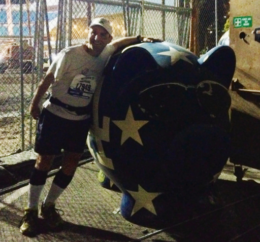

Michael Dipperstein's GitHub Site
Welcome to my GitHub project site. I've been a professional software engineer since 1990. If I was a really good software engineer, I'd have a dynamically updating counter displaying how many years that is. However, the bulk of my experience is with real-time embedded systems, not web page design.
Absolutely none of the code on this site has anything to do with any of my professional work. It's all hobby work. I went through a period when I was playing with data compression for a while and the results have become a large part of this site. I hope some of my hobby work may actually be of use to you.
For those of you that insist my web page would not be complete without a picture of me, just scroll down a bit. I'm the human. The statue is an LA Dodgers pig. The venue is Dodger Stadium. The picture was taken before the start of the 2014 LA Marathon.
I've run a bunch of half marathons and marathons before and after the one in the photo. There are photos of me from every one of those runs, most of the other photos have me with distorted facial expressions. If you think the picture above is bad, you should see the others.
If you have any questions or nothing better to do, feel free to e-mail me at mdipper@alumni.engr.ucsb.edu. Who knows, maybe your e-mail will become part of my stuff.